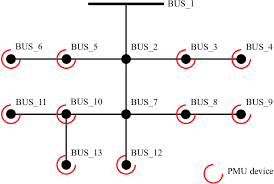
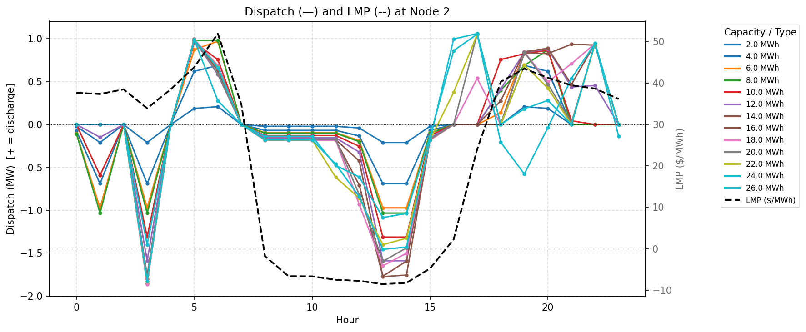
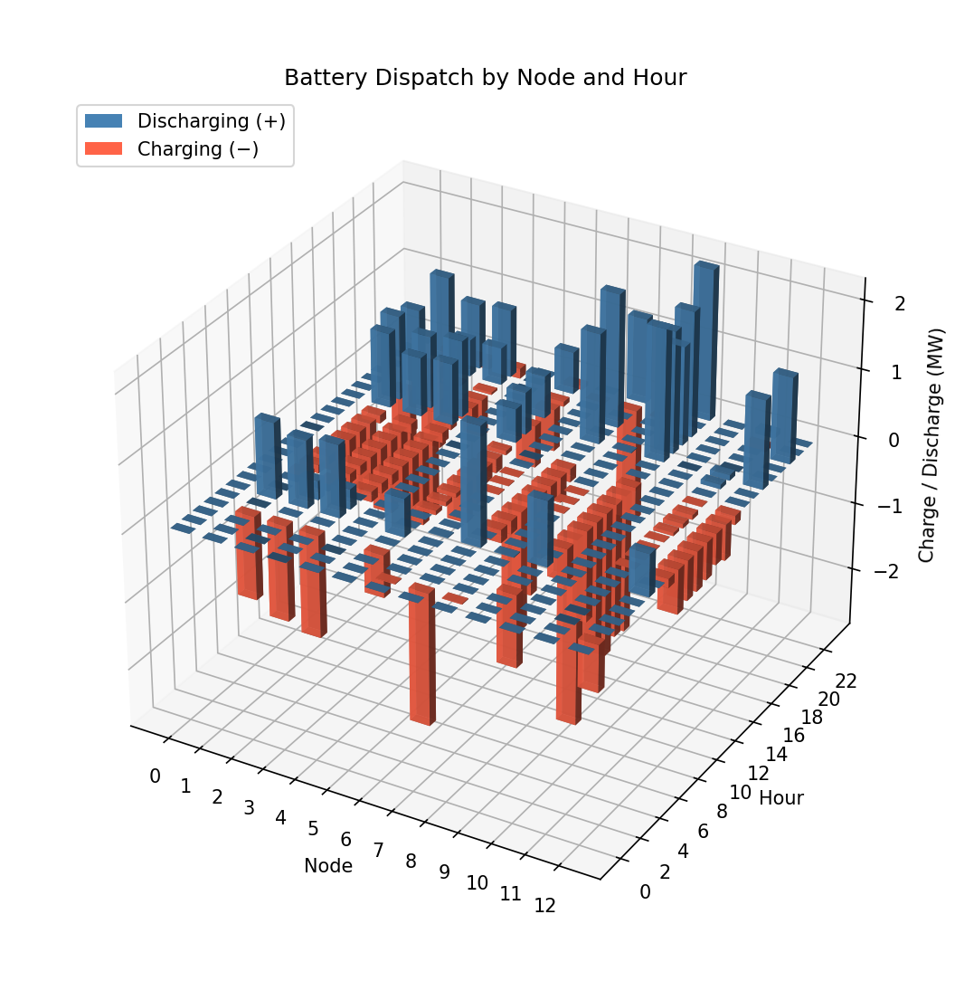
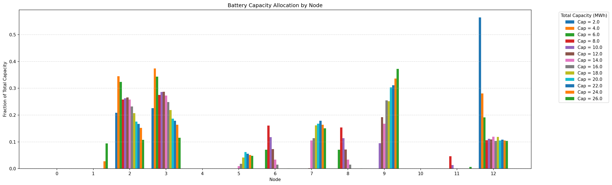
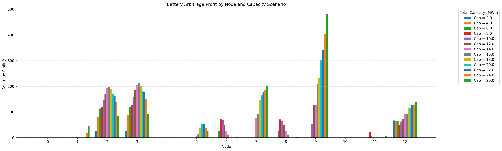

Virtual Power Plant Research
Battery allocation, arbitrage optimization, and residential storage deployment strategy

Overview
Three related projects exploring how distributed battery storage can be deployed, optimized, and monetized across residential and transmission-scale systems. Two academic research papers develop convex optimization frameworks for battery placement and arbitrage on a 13-node IEEE test feeder, using real CAISO market data. A third project applies this research foundation — along with financial modeling and policy analysis of publicly available data — to produce deployment recommendations for SunStrong Management, an asset manager with approximately 500,000 residential solar systems leased across the United States.
Grid Economic Expansion via Battery Storage
ThibaudCambronne/vpp-controllerThis project asks how a social planner should allocate a fixed budget of battery storage across the buses of a small distribution network to minimize thermal generation costs and expand the effective demand frontier. The setting is a 13-node radial feeder with a single generation source, duck-curve demand profiles derived from PG&E load data, and time-varying generation costs drawn from CAISO Day-Ahead Market Locational Marginal Prices (LMPs).
We formulate a convex optimization problem using LinDistFlow power flow constraints and battery state-of-charge dynamics, with a penalty on curtailed demand that captures the price elasticity of electricity. The objective minimizes generation cost while penalizing unserved load, so the solver jointly optimizes battery sizing, siting, and hourly dispatch across a full 24-hour operating day for each of four seasonal scenarios.

The spring scenario — where the duck curve is most pronounced and midday generation prices go negative — yields the largest benefit from storage. The optimal total capacity lies between 22 and 28 MWh, with marginal grid benefit flattening above roughly 30 MWh. Across all budget scenarios, battery siting converges decisively to node 1, which sits immediately downstream of the generation source and serves as the hub through which all downstream load is served. Placing storage at this single bottleneck node eliminates the primary source of line losses and provides the greatest system-wide benefit.


Battery Arbitrage Optimization Across a Feeder
cloitman/vpp-controller-arbThis companion project reframes the battery allocation problem from the perspective of profit-maximizing asset managers rather than a social planner. In the context of real-world VPP operation — motivated directly by SunStrong Management's decision of which households to prioritize for battery installation — asset managers want to maximize arbitrage revenue from time-of-use price spreads, not minimize total system cost.
We implement a two-stage CVXPY optimization. Stage 1 solves the standard OPF without batteries to extract Locational Marginal Prices (LMPs) as dual variables on the power balance constraint — these serve as the naïve price signal that battery operators observe. Stage 2 maximizes battery arbitrage profits against those LMPs using LinDistFlow and full battery constraints (charge/discharge efficiency, SOC dynamics, daily cycle constraint, total capacity budget). This two-stage design models the realistic setting where individual operators treat prices as fixed and do not internalize their aggregate impact on congestion.




Key findings: battery siting converges to low-cost generating nodes and highly connected network hubs; dispatch profiles confirm duck-curve arbitrage independent of capacity; and profit growth flattens above 22 MWh as aggregate battery activity compresses the LMP spread that arbitrage depends on. The highest-value siting location in any radial network is the node immediately downstream of the most congested line — identifying this in a real network requires a congestion map and shadow price analysis.
California Residential Storage Deployment Strategy
Prepared for Cisco DeVries at SunStrong Management, this policy and financial analysis translates the academic optimization work into actionable deployment recommendations for SunStrong's fleet of residential solar systems. The analysis uses publicly available CAISO, CPUC, and utility rate data to evaluate economics by California territory and identify which homes to target first.
California is the clearest near-term market: it leads the U.S. in distributed solar (14,479 MW installed), has the most pronounced duck curve, and operates three investor-owned utilities with meaningfully different TOU rate structures. The top-line finding is that SDG&E territory offers the best risk-adjusted return, driven by the highest peak-to-off-peak price spread in the state ($0.68/kWh on the EV-TOU-5 plan), the strongest utility rebate program ($250/kWh upfront plus $0.10/kWh performance incentive), and significant grid congestion.
Revenue Mechanisms
Three durable revenue streams were evaluated for each utility territory:
- TOU arbitrage: charge off-peak, discharge during the 4–9pm peak window. Expected annual savings of $300–$500/year per home in SDG&E territory. Certain to persist over long time horizons and unaffected by policy changes.
- Utility rebate programs: SDG&E's battery rebate program offers $3,375 upfront per PowerWall plus $351/year in performance payments — roughly comparable to TOU returns but locked in for only five years. SOMAH provides up to $40k per PowerWall for qualifying low-income multi-family housing.
- Demand Side Grid Support (DSGS): California's state reliability reserve pays for flexible capacity during summer peak hours. Payments are strong but program duration is uncertain.
Target Segments
Using SunStrong's fleet data cross-referenced with utility territory, NEM enrollment status, inverter age, and zip-code level reliability data, four priority segments were identified:
- SDG&E territory (13,245 systems): highest TOU spread and strongest rebate program; NEM 3.0 homes have the greatest savings potential with storage.
- Reliability-challenged areas (2,244 systems): homes in High Fire-Threat Districts and circuits with frequent Public Safety Power Shutoffs; backup power value is high and SGIP equity/resiliency adders materially improve economics.
- Inverter upgrade candidates (16,948 systems): arrays installed 2011–2016 approaching end-of-inverter life; bundling battery installation with a planned inverter replacement reduces incremental deployment cost significantly.
- High-value customer areas: higher-income SDG&E households with elevated consumption and TOU exposure; low-income multi-family housing qualifying for SOMAH/SGIP stacking.
Phased Business Strategy
The recommended deployment sequence is: (1) stack government subsidies — SOMAH and SGIP — on low-income and fire-risk homes for the largest immediate returns; (2) transition to utility rebate programs as state subsidies lapse; (3) rely on TOU arbitrage as the permanent, policy-independent baseline revenue; (4) pursue VPP aggregation once sufficient fleet battery capacity is installed. NEM 2.0 status should be preserved wherever possible, as those homes earn more from export and derive less benefit from added storage.
- Python
- CVXPY
- Convex Optimization
- Optimal Power Flow
- LinDistFlow
- Battery Storage Modelling
- CAISO Market Data
- Financial Modelling
- Policy Research
- Power Systems